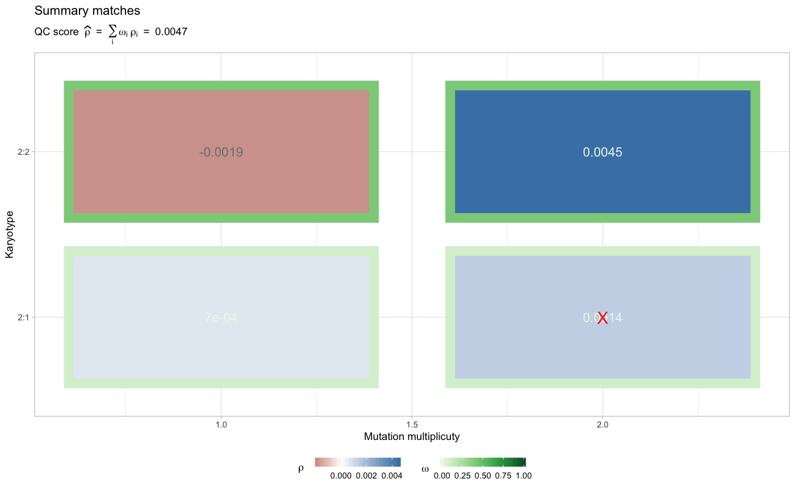

@description Results from analyze_peaks can be visualised with this
function. Compared to individual karyotypes fits available with function plot_peaks_analysis,
this function reports sumary statistics for each karyotype, and the overall score.
plot_qc(x)
| x | An object of class |
|---|
A ggplot object.
data('example_dataset_CNAqc', package = 'CNAqc') x = init(example_dataset_CNAqc$snvs, example_dataset_CNAqc$cna,example_dataset_CNAqc$purity)#> [ CNAqc - CNA Quality Check ] #>#> ℹ Using reference genome coordinates for: GRCh38.#> ! Missing CCF column from CNA calls, adding CCF = 1 assuming clonal CNA calls.#> ℹ Input n = 13141 mutations for 267 CNA segments (267 clonal, 0 subclonal)#>#> ✓ Mapped n = 12963 mutations to clonal segments (99% of input)#> ℹ Requested karyotypes 1:0, 1:1, 2:1, 2:0 and 2:2.#> ℹ Found n = 9041 mutations in 2:2, 2:1 (skipping those with n < 657 mutations).#> # A tibble: 4 x 12 #> mutation_multip… karyotype peak x y counts_per_bin discarded offset #> <dbl> <chr> <dbl> <dbl> <dbl> <int> <lgl> <dbl> #> 1 2 2:1 0.616 0.61 2.99 63 FALSE 0.00592 #> 2 1 2:1 0.308 0.31 3.59 64 FALSE -0.00204 #> 3 2 2:2 0.471 0.46 7.95 587 FALSE 0.0109 #> 4 1 2:2 0.235 0.25 0.84 75 FALSE -0.0146 #> # … with 4 more variables: matched <lgl>, weight <dbl>, score <dbl>, QC <chr>#> ✓ Peak detection PASS with r = -0.00117483319779741 and tolerance e = 0.05plot_qc(x)